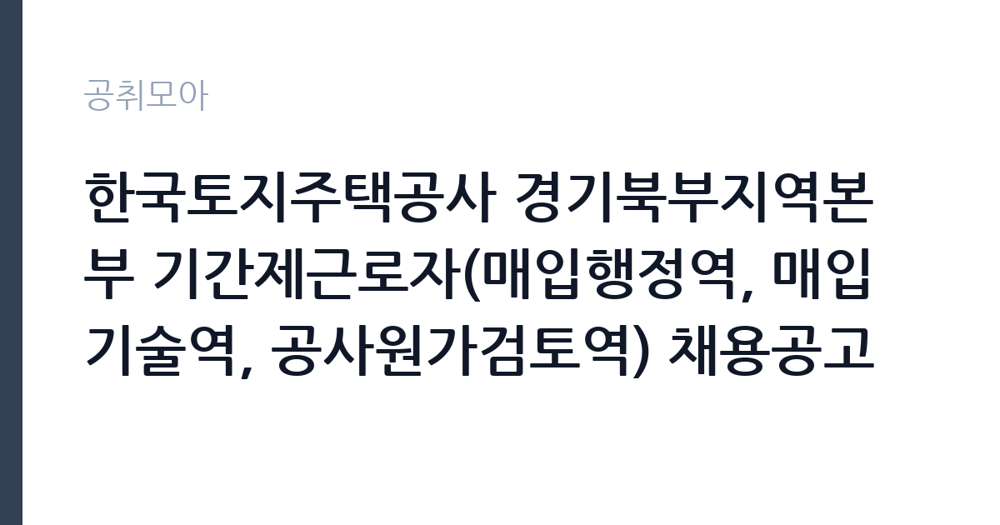

[공공기관] 한국토지주택공사 경기북부지역본부 기간제근로자(매입행정역, 매입기술역, 공사원가검토역) 채용공고
한국토지주택공사 · 경기 · 마감 2026-11-09 (D-15) · 출처 잡알리오

한눈에 보는 모집 조건
| 기관 | 한국토지주택공사 |
|---|---|
| 공고명 | 한국토지주택공사 경기북부지역본부 기간제근로자(매입행정역, 매입기술역, 공사원가검토역) 채용공고 |
| 고용형태 | 기간제 |
| 근무지 | 경기 |
| 게시일 | 2026-10-26 |
| 마감일 | 2026-11-09 (D-15) |
지원자격, 이렇게 읽으세요
- 공공기관 채용공시
- 세부 조건은 원문 공고문 확인
공통 요건은 LH 기간제 채용의 전형적인 구조입니다. 본인과 배우자, 생계를 같이하는 직계존비속이 경기북부지역본부 관할 지역에서 매도신청을 한 이력이 없어야 하고, 주택매입 심의위원을 맡은 적이 없어야 합니다. LH와 대한주택공사, 한국토지공사의 임직원 근무 이력도 없어야 합니다. 매입행정역은 운전면허 2종 보통 이상과 함께 공인중개사, 주택관리사, 또는 관련 기관 5년 이상 실무 경력 중 하나를 요구합니다. 매입기술역은 해당 분야 기사 이상 자격과 설계·시공·감리·CM 실무경력 5년 이상을 모두 충족하고 건설기술인 경력증명서상 중급기술인 이상이어야 합니다. 공사원가검토역도 기사 이상 자격에 중급기술인 이상, 실무경력 5년 이상이 기준입니다.
이 공고의 포인트
같은 날 인천과 경기남부에서도 같은 형태의 공고가 나왔다는 점이 이 공고의 성격을 말해줍니다. LH가 수도권 매입임대 사업을 동시에 확장하고 있다는 뜻이고, 세 본부의 요건과 평가 방식은 거의 같습니다. 따라서 유리한 쪽을 골라 지원하는 전략이 유효합니다. 경기북부의 특징은 관할 범위가 넓다는 것입니다. 매입 대상 주택이 의정부나 고양에 몰려 있지 않고 파주, 포천, 양주까지 퍼져 있어 현장 방문 이동 거리가 길어집니다. 차량 운전이 필수 요건인 이유가 여기에 있습니다. 지원자는 통근 가능성과 현장 이동 부담을 함께 따져야 합니다.
전형은 어떻게 진행되나
1차 서류전형은 자격 요건 충족자를 대상으로 자기소개 30점, 지원동기 30점, 경험 및 경력 40점, 가점 20점을 합산해 고득점자 순으로 채용인원의 2배수를 선발합니다. 동점자는 전원 합격 처리합니다. 서류 합격자 발표와 면접 안내는 11월 16일 이후 개별 통보되고, 2차 면접전형은 의사소통 30점, 문제해결 40점, 조직적응력 30점에 특별우대 가점 10점을 더해 평가합니다. 면접 70점 미만은 과락입니다. 예비합격자는 분야별 3명을 순위 확정으로 선발하며, 최종합격자 발표는 11월 26일 이후입니다. 인천본부보다 최종 발표가 하루 늦습니다.
원문에서 확인한 전형 방식
[공통] 1. 한국토지주택공사 「인사규정」제9조(채용금지) 및 「기간제근로자 운영지침」제15조(채용금지)에 해당되지 아니한 자 2. 본인, 배우자, 생계를 같이하는 본인의 직계존비속, 생계를 같이하는 배우자의 직계존비속이 지역본부 관할지역 내 매도신청 등을 하지 아니한 자 또는 본인이 주택매입 심의위원이 아닌 자(※과거 신청이력도 없어야 함) 3. 공고일 기준 한국토지주택공사 「직제규정」 제3조, 제4조, 제5조에 따른 임직원으로 근무한 이력이 없는 자 (대한주택공사 및 한국토지공사의 근무 이력도 없어야 채용 가능) 4. 남자의 경우 병역을 필하였거나 면제된 자 5. 공고일 현재 만 18세 이상인 자 [매입행정역] 공고일 기준 운전면허(2종 보통 이상) 자격증 소지한 자로서, 아래 제1호 내지 제3호 자격요건 중 하나를 충족하는 자 1. 공인중개사 2. 주택관리사 3. 공인중개사사무소, 감정평가법인(사무소), 법무사사무소, 법률사무소·법무법인에서 실무 경력 5년 이상 종사한 자 [매입기술역] 공고일 기준 운전면허(2종 보통 이상) 자격증 소지자로서, 아래 제1호 및 제2호를 모두 충족하는 자 1. 해당분야 기사 이상 자격
이런 분께 추천해요
- 경기북부 지역 지리에 익숙하고 차량 운전이 편한 분
- 공인중개사·주택관리사 자격으로 매입 실무를 시작하려는 분
- 건축·기계·전기 분야 기사 이상 자격과 감리·CM 경력을 갖춘 분
지원 전 체크리스트
- 경기북부 관할 지역 내 가족의 매도신청 이력이 없는지 확인했는가
- 현장 방문과 이동이 가능한 운전면허·차량 조건을 갖추었는가
- 건설기술인 경력증명서 등급이 중급 이상인지 확인했는가
- 11월 9일 마감 전에 온라인 접수를 완료했는가
모집 일정과 제출 타이밍
공고일은 10월 26일이고 접수는 11월 9일 마감입니다. 서류 발표 11월 16일, 최종 발표 11월 26일로 인천본부와 거의 같은 일정입니다. 경력증명서와 자격증 사본을 준비하는 데 시간이 걸리므로 첫 주에 서류를 확보하고 둘째 주에 지원서를 완성하는 계획이 적절합니다. 지원서는 자기소개와 지원동기, 경험 및 경력 항목으로 나뉘어 있어 각 항목의 분량 제한을 먼저 확인해야 합니다. 서류 발표 후 면접까지 간격이 짧으므로 면접 예상 질문은 접수 전에 정리해 두십시오.
직무 이해하기: 공공기관
경기북부지역본부의 매입 업무는 관할 지구가 넓은 만큼 이동과 현장 확인 비중이 높습니다. 매입행정역은 매도 신청 주택의 권리관계를 확인하고 등기부등본과 건축물대장을 대조한 뒤 계약과 지급 절차를 진행합니다. 하루에 여러 건의 현장을 도는 날이 생기고, 매도인과 임차인, 중개사를 함께 상대하는 일이 많습니다. 매입기술역은 신축 매입임대 주택의 설계 검토와 시공 상태 점검, 품질 점검을 맡습니다. 공사원가검토역은 적정가격 산정과 원가 분석 자료를 만들고 계약 부서와 협의합니다. 세 분야 모두 문서 작업과 현장 확인이 반복되는 구조입니다.
자기소개서 작성 팁
경험 및 경력이 40점으로 가장 큰 비중을 차지하므로 여기에 분량을 집중하십시오. 경기북부 지역에서 근무하거나 거래한 경험이 있다면 관할 지역의 주택 시장 특성을 언급하는 것이 좋습니다. 예를 들어 파주나 고양 일대의 신축 매입임대 물건을 검토한 경험, 다가구·다세대 주택의 권리관계를 확인한 경험은 직접적인 소재가 됩니다. 지원동기는 LH의 매입임대 사업이 전세 시장 안정과 어떻게 연결되는지 한 문단으로 정리하고, 본인이 그 과정에서 어떤 역할을 할 수 있는지로 마무리하십시오. 자기소개는 업무 스타일을 세 문장 이내로 압축하는 편이 읽기 좋습니다.
면접 준비 포인트
면접은 문제해결 40점, 의사소통 30점, 조직적응력 30점 배점으로 진행됩니다. 경기북부는 관할 지역이 넓어 이동과 일정 관리에 관한 질문이 나올 수 있습니다. 하루에 여러 현장을 배정받았을 때 우선순위를 어떻게 정할지, 매도인이 서류 제출을 미룰 때 어떻게 독려할지, 현장에서 예상하지 못한 하자를 발견하면 어떤 절차를 밟을지 등을 준비하십시오. 의사소통 항목은 이해관계가 다른 매도인과 임차인 사이에서 설명하는 능력을 봅니다. 감정적 대응 없이 근거를 들어 설명한다는 점을 드러내면 좋습니다.
급여·근무조건 읽는 법
LH 기간제근로자의 보수는 기본급, 직무수당, 정기상여금을 합산한 월 지급액으로 공고문 보수표에 제시됩니다. 이번 공고는 본문에 금액을 적지 않아 첨부 공고문에서 직접 확인해야 하며, 확인되지 않은 금액은 추정하지 않는 것이 원칙입니다. 비교 기준을 잡고 싶다면 2026년 8월 경기남부지역본부가 낸 기간제 공고에서 대체채용 사업관리 직무가 월 253만 8,840원, 법무관리 직무가 월 351만 4,310원으로 제시된 사례를 참고할 수 있습니다. 이번 매입 분야는 경력 5년 이상을 요구하므로 그보다 높게 책정될 가능성이 있지만 원문 확인이 필요합니다. 기간제법에 따라 정규직 전환 대상이 아니라는 점, 계약 기간과 근무 개시일도 함께 확인해야 합니다. 2026년 적용 최저임금은 시급 10,320원, 월 환산 2,156,880원입니다.
자주 묻는 질문
- 경기북부와 경기남부 공고에 함께 지원할 수 있나요?
두 공고는 지역본부가 다르게 운영되지만 LH 내부 기준상 중복 지원 가능 여부와 채용 결격 조항을 공고문에서 확인해야 합니다. 임직원 근무 이력 등 공통 결격사유는 동일하게 적용됩니다. - 매입기술역은 어떤 분야를 뽑나요?
건축, 기계, 전기 등 해당 분야 기사 이상 자격과 설계·시공·감리·CM 실무경력 5년 이상을 요구하며, 건설기술인 경력증명서상 중급기술인 이상이어야 합니다. - 현장 방문이 많은가요?
관할 지역이 넓어 매입 대상 주택의 현장 확인을 위해 차량 이동이 잦습니다. 운전면허 2종 보통 이상을 필수로 요구하는 이유도 여기에 있습니다.
함께 보면 좋은 공고
[공공기관] 2026년도 10월 블라인드 공개채용 계약직 (보건직, 행정직, 원무직) 모집 공고 — 마감 2026-11-09[공공기관] 2026년도 10월 블라인드 공개채용 국비계약직(작업치료사) 모집 공고 — 마감 2026-11-09[공공기관] 한국토지주택공사 인천지역본부 기간제근로자(매입행정역, 매입기술역, 공사원가검토역) 채용공고 — 마감 2026-11-09출처: 잡알리오 공개정보를 바탕으로 공취모아가 정리한 안내글입니다. 모집 조건·일정은 변경될 수 있으니 지원 전 반드시 원문 공고문을 확인하세요. 본 글은 정보 제공용이며 합격을 보장하지 않습니다.